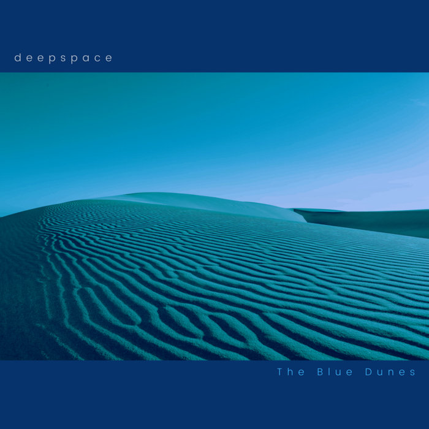
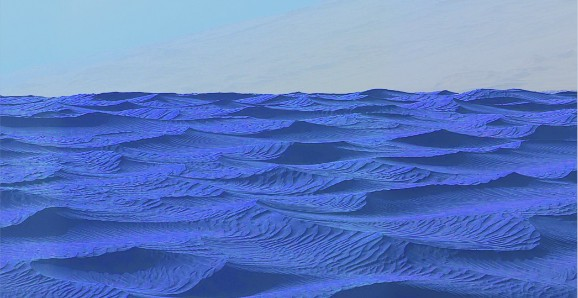
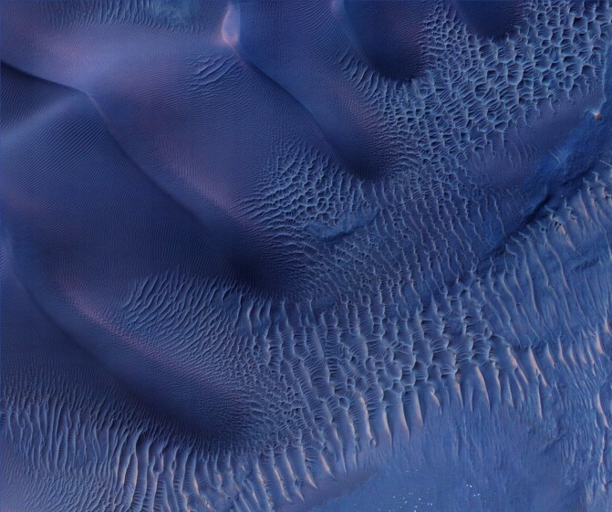
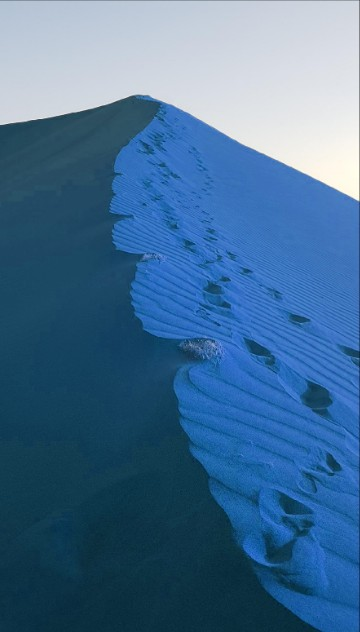
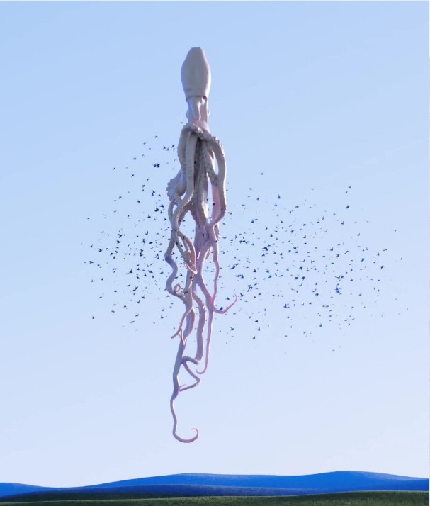
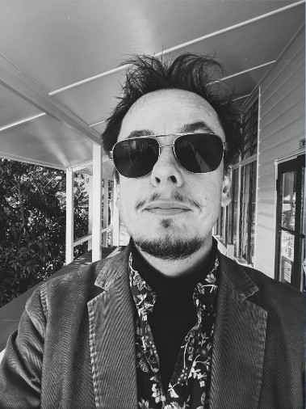

Here is the accompanying science fiction short story to The Blue Dunes. It could be atmospheric to read while listening to the album.
- The album
- 1 The Blue Dunes
- 2 An Unexpected Shelter
- 3 Emptiness
- 4 The Wind at Night
- 5 The Flatlands
- 6 The Memory
- Last entry
- About deepspace
THE BLUE DUNES, a serene and meditative work from starfaring Australian ambient/electronic artist Deepspace, paints calm and exquisite sound pictures of imagined desert landscapes. Deepspace’s second album on Projekt Records contains six floating passages of soft waves inspired by the Odyssey orbiter's 2021 finding of what first seemed to be blue-coloured dunes on Mars. THE BLUE DUNES takes the aesthetic impact of that discovery and explores a desert bathed entirely in those cool serene hues.

Even though the dunes only appeared blue due to false-colour imagery indicating temperature, it was enough to kindle the desire for such a surreal place. This desert, with its imagined shadings, is the starting point for Deepspace’s hypnotic ambient drone. Longing, desolate shimmers with glassy luminescence abound, interspersed with soft transient murmurs not quite identifiable — maybe the aural representation of a cluster of strangely-shaped rock, or something unusual in the path on this voyage into a vast and strange terrain. Like a pulsing heatwave, blue chords hover and transform, invoking a halcyon shimmer that sings of the love of solitude and nothingness. Occasionally, some respite from the harsh barren desert occurs as the chords dissipate and clouds form, providing shade from the penetrating sun.
This album is the sound of an artist using the minimal amount of tools possible to achieve something that is not achievable by using more.
Mirko says: “I think that most ambient creators listen to their own work after creating it for a number of reasons: to check for errors, consistency, feel and various other aspects. But I have listened to THE BLUE DUNES almost obsessively since creating it. It calms me deeply, and it is the right feeling — and this aspect is so intangible to me that after all these years of creating ambient works, I still don’t know what makes any piece the right feeling for an album, other than how it takes my imagination on a journey and somehow fits the theme. I try to let inspiration drive me, as it always ends up being more exciting than too much intentional planning. I've discovered this through trial and error.”
Wandering through an ambient dream of deserts unknown, the album is a 70-minute exploration of a far-away and imaginary place. Whatever the type of place evoked, this album is a love song to escaping the chaos and noise of our world and feeling the glittering, gentle pull of solitude and warm isolation. And who knows, maybe there are blue deserts somewhere out there.
On top of this, a story emerged from the music. Read on and discover the journey into the blue dunes.
Track 1: The Blue Dunes
I’ve travelled north on foot for a day and am near the southern part of the dunes. They stretch north for untold kilometres, so I will need to make my supplies last with enough to get back to my ship. I can see them looming invitingly in the distance, probably only an hour away now. They are stunningly beautiful from here, resplendent and blue under the warm white sun, surreal in their glory and slow vastness. The sensor in my watch emits its dulcet pulse every few minutes, guiding me on. I will camp near the dunes tonight.
I can see the dunes from my tent, only a few hundred metres away now. I sit cross legged and ponder their serene desolation - such a strangely unnatural description - they offer hypnotic beauty yet are no place for life. A faint wind chases ripples of sand up and down the main dune nearby. I am so alone out here. As the sun sets and the planet turns imperceptibly, I crawl into my tent to rest for tomorrow.
On closer inspection, the dunes are dark creamy blue throughout; they are composed of countless tiny jewels of sand.
After striking my little camp, I begin my walk proper. Here I go. Blue sand passes under my feet as I cross the first dune and see the magnificent array of sand formations that emanate northward under the sky. My lungs command an involuntary intake of air as I scan the panorama in front of me. I only release the air about 10 seconds later, feeling my chest lower and a tingling sense of warmth and excitement spread throughout my body. On closer inspection, the dunes are dark creamy blue throughout; they are composed of countless tiny jewels of sand. Together they create a blue environment that is deeply lulling and hypnotic, creating a sense of profound aloneness and delight. I stop and pour some warm pure blue sand through my hands and then resume walking, smiling with wonder.

Track 2: An Unexpected Shelter
The sun is hotter than I thought it would be. While the temperature is lower than what you would normally expect in a desert, the heat generated by walking makes the otherwise idyllic 27 degrees Celsius (80° F) build up over time, mostly due to the glare of the slightly smaller white sun. I walk over a crescent dune and am stopped in my tracks.
I walk over a crescent dune and am stopped in my tracks. An empty ruin of rocks lies before me.
An empty ruin of rocks lies before me.
In the middle of a valley between dunes lies this sudden surprise. Like a temple, except created by wind, sand and sun instead of hands, this strange conglomeration stands hidden beneath the tops of the surrounding dunes. Rocks are worn by wind into surreal shapes that defy architecture. The structure provides shade, which I eagerly accept. I sit on the dark rocks, in a cave-like alcove, appreciative and drink from my water supplies. The wind sings and this causes the rocks to resonate with deep languid tones or at least I imagine they do, I’m not sure. I put my hands on the rocks and feel the vibrations. Cool, dark relief on my palms. I did not expect such a sensation from this.
I picture cool water flowing underground as I look around the quiet valley between the dunes. I imagine that I can hear it underneath the rocks and visualise descending down to seek more shelter. I enjoy my time here before setting off.
Track 3: Emptiness
Walking again. I remember that it is the second day, but it doesn’t feel like it. Time seems dilated in this vast place. Normal constructs that we hold in order to make sense of things become confused and somewhat merged. Time becomes distance becomes landscape becomes sky. The sands have also become hotter. Arid. Telling me something. I’m not sure what.
Clouds pass overhead, non-sentient, although I’m questioning all my assumptions now.
Clouds pass overhead, non-sentient, although I’m questioning all my assumptions now. They are imperious white beasts, like slow motion cats, teasing me with their streaky fluffiness, far above, observing my frailty and slowness. I must look like an exiled ant with a death wish to them. It is hard to hold onto the idea of time in an ordinary way when you walk through such a vast landscape. And thoughts seem a bit more slippery, a bit like some of the more vertiginous dunes I am clambering up now. I'm getting a bit fatigued today. Dune after dune. Climbing, then slight relief as I descend. The sensor on my watch beeps, renewing a sense of identity and purpose within me.
Track 4: The Wind at Night
In my tent, the sand stops stinging my face. Conditions have worsened somewhat but are still manageable. Supplies are doing their thing: being in decline, as they do. But I should be ok. I feel like something is happening but can’t figure out for the life of me what it is. It’s like my mind is being affected by something. I distract myself and sleep, although it is unsettled sleep as the wind is loud and all encompassing outside. The sound of the sensor is a little louder now when it does its regular beep and sounds...somewhat hollow and eerie. It must be my imagination or the wind. Yes, it’s a little of both I would say.

I wake up in the middle of the night and the wind has stopped. Completely. It is incredibly quiet. I enjoy the strange stillness and go back to sleep, thankful. My dreams are haunted by sand.
Unexpectedly, the sensor beeps at a new, different pitch. My pack hits me in the back as I stop in my tracks instantly.
Track 5: The Flatlands (Ghosts in the Heatwaves)
The sensor on my arm beeps a little louder again. I am getting closer. The dunes are much smaller now and are mostly part of a flat blue landscape riddled with ripples of sand. If I thought the dunes had a desolate feeling a few weeks ago….. no wait, it’s only been a few days. Anyway, it’s much more desolate here. I can see the flat area rimmed by distant dunes up ahead and all around the flat relief that I am walking through. It could have been a lake once. There are some odd small rocks to confirm my suspicions.
I wonder if there is still water somewhere underneath the ground in cool labyrinthine caves. I can’t tell how far away the perimeter dunes are. It could be an hour away, or a day. I can’t trust my depth perception anymore. Everything feels far away. Like I’m sinking into this sea of sand. I can hear my heart beating when I stop walking, so I don’t stop. The heat is intensifying, and I feel it coursing through my body from the sand into my legs then upwards, as well as from the sun through my skull downwards.
Ghosts moving in the heatwaves.
This is bothering me as there is no escape, and I have to fight back a feeling of claustrophobia which is strange as I couldn’t be in a less confined space. Only my tent, attached to my backpack, and the odd steep dune in the afternoon, which there are none of right now, offer any shade. I have started noticing shapes and movement on the horizon. Ghosts moving in the heatwaves. Writhing flashes of light in between the distant perimeter dunes and the flat sand. It is unnerving, yet I console myself that the shapes are not real and are a result of the shimmering heatwave. But how would I be able to tell if they were real? I silence this thought. I don’t look and walk on. I must get my thoughts under control.
Unexpectedly, the sensor beeps at a new, different pitch. My pack hits me in the back as I stop in my tracks instantly.
It is then that I see it.
There were things in the heatwave after all.
Track 6: The Memory
As I sit in the carrier ship, I mutely ponder what has just happened and why I am sitting, dressed in a robe, in an empty room. I woke up in a bed, got dressed and came and sat down here. I read through my journal and can see the words and events that happened over the past week transcribed on my device. But in my mind, it’s all just gone. None of that happened. I don’t remember writing the last or any of the entries. The edges of memory I do have are so frayed that I can’t remember where reality joins with my supposed trip. It feels like a stranger’s hand filled in my journal, or that I am reading a work of fiction.
But in my mind, it’s all just gone. None of that happened. I don’t remember writing the last or any of the entries.
I look through the window at a landscape moving far below. The blues everywhere seem more vivid now. I see the colour everywhere, even as I write in my journal. Even in the composition of other colours and it fills me with a sense of something. Maybe it’s serenity or peace, without it being that specific. Maybe the memories in the journal will come back over time to explain what happened. Maybe they won’t. Maybe it wasn’t me, and I’m not sure I want to know now. I don’t really know what I have lost or gained. Is this some sort of dissociative amnesia? That normally happens when someone has witnessed something extremely traumatic. The thought makes me uncomfortable.

Last entry
I’ve been having the most vivid dreams. In one, I am wandering among blue dunes and hovering about a hundred metres up in the sky is the most collossal squid, suspended vertically into the sky. The thing itself is probably several hundred metres long, and there are thousands of birds, or what look like birds flying in and out of the siphon near its eyes. It looks like it’s a nest for these creatures. The tentacles move slowly as this behemoth just hovers above the desert.

Another dream is of a giant humanoid creature wandering the dunes. I try to stay out of sight, but it eventually sees me and emits a horrendously loud howl. I feel my body shake with fear, and then I wake up. I don’t know what these dreams mean. Is my unconscious trying to process what I saw? They’ve occured multiple times now, and I am getting desperate for an answer. What the hell did I see?
I don’t know what these dreams mean. Is my unconscious trying to process what I saw?
Journal ends.
About deepspace
Deepspace is Brisbane, Australia-based ambient artist Mirko Ruckels. His hypnotic, glacial, dreamy and atmospheric work is created with synthesizers, software and acoustic instruments such as bells, guitars and piano. When he was a little boy in Germany (he is German/French) he would slip into a reverie at hearing a distant lawn mower, church bells, passing planes, or the rumblings of far-off trains. This love of drones and ambient sound led to a wonderous moment upon discovering like-minded artists and listeners who also enjoyed atmospheric environments that evoke liminal moods and spaces. Ruckels discovered vidnaObmana and later Steve Roach, their unconventional approach inspired him to explore and create his own pieces. He says: “I literally had no idea how to make ambient music and just felt my way in the dark.” In 2006, Deepspace was born. Themes range from macro — such as space, underwater, deserts and science fiction imaginings, to micro — internal states and microscopic life.

Deepspace has released thirteen albums; two through Projekt Records; SUPERRADIANCE, and THE BLUE DUNES, ten self-released and THE GLITTERING DOMAIN (2009) through American label Hypnos. He has two 2021 collaborations with theAdelaidean ADRIFT and ANTIGRAVITY, both on Projekt Records.
The album is available at Projekt's Bandcamp page.
The original booklet, as a PDF: The Blue Dunes booklet (PDF)
©2022 Projekt Records
Music publishing by APRA